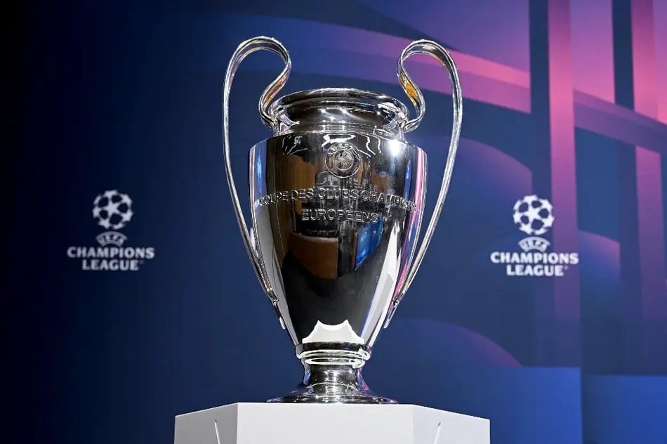

Introdução
A UEFA Champions League é a principal competição de clubes de futebol da Europa. Organizada pela UEFA, reúne as melhores equipes do continente e é considerada um dos torneios mais importantes do mundo.
Como Surgiu
A UEFA Champions League surgiu em 1955 com o nome de Taça dos Clubes Campeões Europeus. Em 1992 passou a adotar o nome atual.
Fundadores
A competição foi criada com a colaboração do jornal francês L'Équipe e posteriormente passou a ser organizada pela UEFA.
UEFA
A UEFA é a entidade responsável por organizar o futebol europeu e as principais competições entre clubes e seleções.
Como a Champions League Funciona
Atualmente os clubes disputam uma fase de liga. Os melhores avançam para as fases eliminatórias até a grande final.

Formato da Fase de Liga